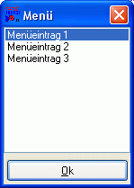

LISTBOX
LISTBOX
LISTBOX
LISTBOX
| Syntax: | LISTBOX Eintrag = Titel, Elementenliste |
| Beschreibung: | Zeigt einen Listenauswahldialog an, der dem Benutzer das Wählen von einem oder mehreren Einträgen aus einer vorgegebenen Liste an Elementen ermöglicht. Als Parameter erwartet diese Funktion einen Dialogtitel sowie eine Liste an Elementen, die zur Auswahl im Listenfeld angezeigt werden. Jedes Element wird dabei durch das in der Variablen [std_sep] definierte Separationszeichen getrennt, dies ist normalerweise das Pipe-Zeichen (|). Rückgabewert der Funktion ist der gewähle Listeneintrag. Klickt der Benutzer den Schlieflen-Button des Dialogfensters oder drückt er auf "OK", ohne etwas auszuwählen, wird ein Leerstring zurückgegeben. Standardmäflig erlaubt LISTBOX nur die Auswahl eines einzelnen Eintrags. Wenn jedoch die Variable [ListBox_MultiSel] den Wert 0 hat, so lassen sich auch mehrere Einträge selektieren. In diesem Fall gibt die Funktion eine Liste zurück, in der alle selektierten Elemente durch das in [std_sep] definierte Zeichen voneinander getrennt sind.  |
| Beispiele: | rem LISTBOX mit einfacher Auswahl listbox [menu] = 'Menü', 'Pizza|Pommes Frites|Döner|Hamburger|Hot Dog' if [menu] ! '' echo 'Sie haben ' # [menu] # ' bestellt!' else echo 'Sie haben keine Auwahl getroffen.' endif rem LISTBOX mit Mehrfach-Auswahl [ListBox_MultiSel] = [true] listbox [menu] = 'Menü 2', 'Pizza|Pommes Frites|Döner|Hamburger|Hot Dog' if [menu] ! '' replacevar [menu] = [menu], [std_sep], [new_line] echo 'Ihre Bestellung: ' # [new_line] # [new_line] # [menu] else echo 'Sie haben keine Auwahl getroffen.' endif |
| Bemerkungen: | Die Beschriftung des OK-Buttons von LISTBOX kann über die Variable [ListBox_Ok] geändert werden. Wird die Beschriftung des Buttons auf einen Leerstring gesetzt, wird der Button aus dem Dialog ausgeblendet (nur Anzeige der Elemente in der Liste). Die Position des Dialogs kann mit Hilfe der Variablen [ListBox_X] und [ListBox_Y] verändert werden. Hat [ListBox_X] und/oder [ListBox_Y] den Wert 0 wird der Dialog automatisch jeweils horizontal oder vertikal zentriert (dies ist die Standard-Einstellung). Die Defaultgröfle des Dialogs lässt sich über die Variablen [ListBox_Width] (Breite) und [ListBox_Height] (Höhe) setzen. Die Angabe bei Positionierungs-/Dimensionswerten erfolgt in Pixel. Das Dialog-Icon kann global für alle Dialoge über die Variable [app_icon] auf eine externe .ICO-Datei gesetzt werden. |